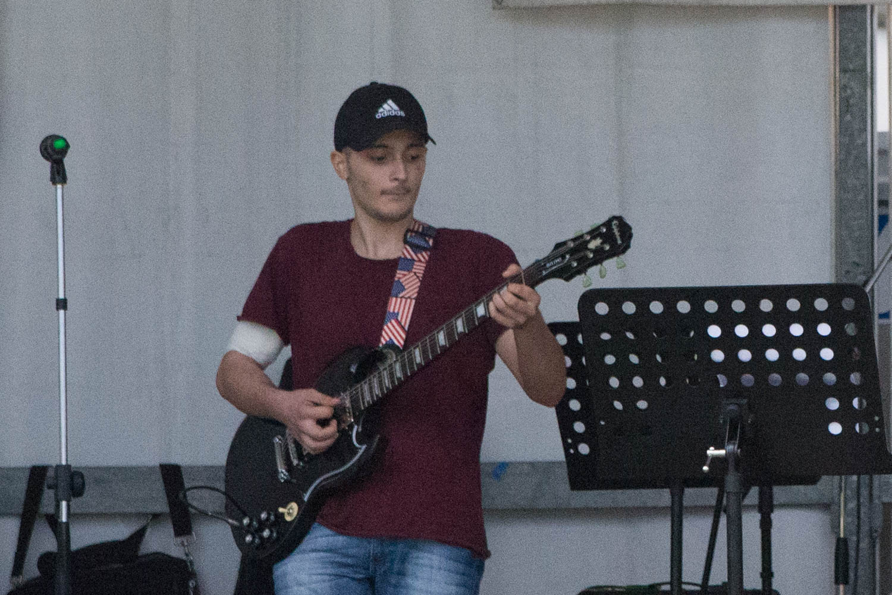
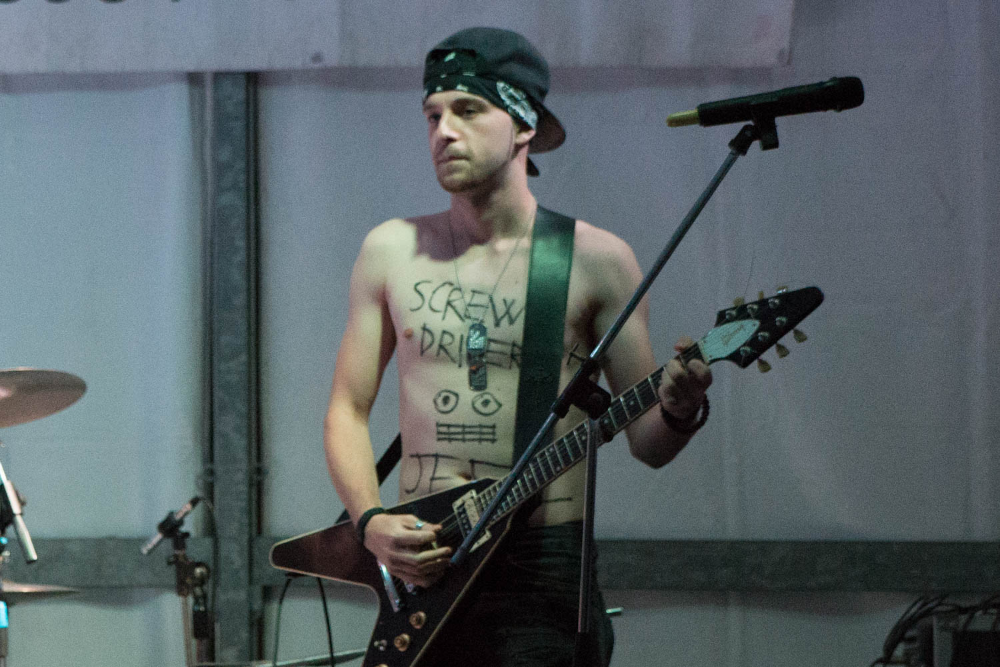
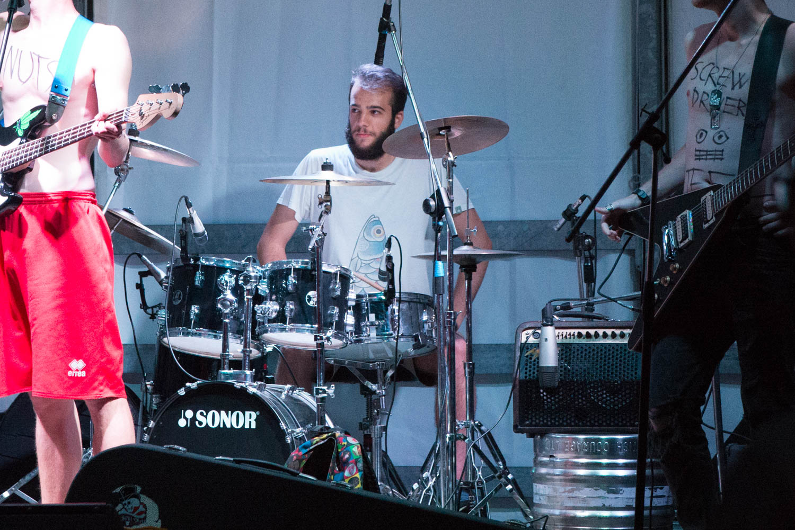

Paolo
Paolo canta praticamente da quando è nato, che più o meno coincide con il momento in cui ha conosciuto Lorenzo. Da qualche mese è anche il bassista del gruppo o meglio, improvvisa con il basso, visto che il miglior bassista in realtà fa il chitarrista. È alla continua ricerca di parole e un buon giro di accordi per scrivere la prima canzone del gruppo, ma spesso finisce con il considerare i suoi pensieri poco profondi e decide di farsi qualche birra (che però non deve nel modo più assoluto essere un’odiatissima pils). Dopo anni di ascolto dei più disparati gruppi rock è arrivato a considerare i Jane’s Addiction “la band definitiva”.


Gerald
All’età di 8 anni Gerald comincia ad interessarsi alla musica e i genitori gli comprano una chitarra giocattolo. Mettere le mani su quel primo strumento crea in lui il desiderio di prendere lezioni e sostiene l’esame di ammissione alle scuole medie ad indirizzo musicale. Inizialmente viene bocciato, ma dopo aver ricevuto una seconda possibilità riesce ad accedere ai corsi. Dopo 3 anni esce con il massimo dei voti e continua a studiare da autodidatta, prendendo come riferimento Angus Young degli Ac/Dc, sua band preferita, e Slash dei Guns n’ Roses. Senza il suo impegno organizzativo gli Screwdriver&Nuts sembrerebbero più gli amici della birra che una rock band.


Davide
Davide sostanzialmente è un pazzo. Gira il mondo, o almeno la provincia di Milano, sulla Betty, la sua bici/moto autocostruita, indossa sempre bandana e cappellino dei Metallica contemporaneamente (qualche leggenda metropolitana vuole che ci siano sotto dei capelli, ma nessuno può affermare di averli visti con certezza), ed è un mago con la chitarra, sempre che si ricordi la parte. Nel suo laboratorio segreto smonta, modifica e rimonta i suoi strumenti nel tentativo di creare la Frankenstein-chitarra definitiva, da collegare al suo venerato amplificatore Randall, recentemente tradito con un banale Marshall. A qualsiasi domanda gli venga fatta risponde “Jeez”, che può rappresentare qualsiasi suo stato d’animo; ritiene di essere “Jeez Man” o il “Papa del Jeez”, ma nessuno sa bene cosa voglia dire. Ogni volta che vede Gerald, Paolo e Lorenzo chiede di suonare Black Metal, ma loro puntualmente lo guardano male.


Lorenzo
“Che strumento ti piacerebbe suonare?” “La batteria!”. A undici anni, senza averci mai pensato prima, Lorenzo capisce di voler cominciare a studiare batteria. Con il passare del tempo i suoi gusti musicali continuano ad espandersi, attraversano tutto l’universo del rock e proseguono verso blues, jazz e fusion. Agli assoli di chitarra e agli urli dei cantanti è poco interessato, quello che veramente cerca in un brano è la sinergia che si crea tra basso, chitarra e batteria: il groove. Dopo otto anni da batterista studia swing appassionatamente, fa parte di una rock band, pensa che non ci sia genere più divertente da suonare del funk ed è innamorato del suo rullante in rame, dal peso mastodontico e dal suono scurissimo, che chiama affettuosamente “il pentolone”.